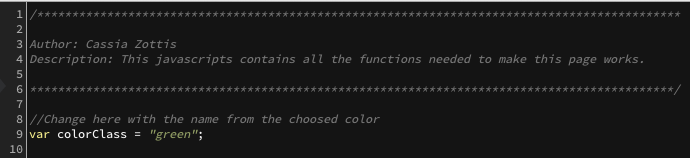

Modern and Clean Personal Template - by Cassia Zottis
Modern and Clean Personal Template
Created: 11-09-2013
By: Lisa Shiphrah
Email: lisa.shiphrah@gmail.com
Table of Contents
A) HTML Structure - top
This theme is composed by several divisors, and a menu. Each divisor corresponds to an item of the menu. The code is full of comments, helping the user to customize it.
To change the color from the template to one in our pallet, you need just to change the first line of your 'card.js' file.
Where it is written var colorClass = "green"; you can change for default, red, blue, green, purple, pink or gold.
B) CSS Files and Structure - top
I'm using one CSS file in this theme. This file contains some general styling, such as font-sizes, background colors, etc.
C) JavaScript - top
This theme imports five Javascript files.
- jQuery 1.10.2 and 2.0.3
- Card.js
- Lightbox Plugin
- jQuery is a Javascript library that greatly reduces the amount of code that you must write.
- This script contains the main functions to make the template works correctly. All of its functions are well commented and organized.
You can see above a piece of the javascript file.

- This javascript is required to make the lightbox effect presented in Portfolio page.
Lisa Shiphrah